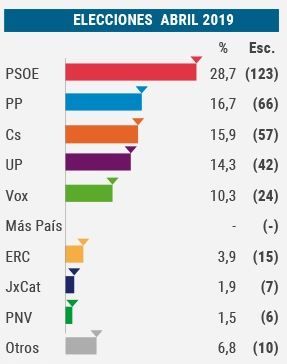
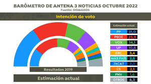

ESTADISTICAS DE PARTIDOS POLITICOS
El vencedor de las elecciones fue el Partido Popular, presidido y liderado por el presidente en
funciones Mariano Rajoy, cuyas candidaturas obtuvieron en el Congreso de los Diputados una
mayoría simple de 137 escaños (catorce más que en diciembre de 2015), seguido del Partido
Socialista Obrero Español de Pedro Sánchez, que obtuvo 85 diputados (cinco menos que en los
anteriores comicios). Unidos Podemos, coalición electoral formada por Podemos, Izquierda Unida,
Equo y otros ocho partidos menores de izquierda liderada por Pablo Iglesias y Alberto Garzón, obtuvo
45 diputados (en 2015 Podemos obtuvo 42 y Unidad Popular, 2), que sumado a las coaliciones
autonómicas En Comú Podem-Guanyem el Canvi —que revalidó sus 12 parlamentarios, Compromís-
Podemos-EUPV: A la valenciana (8) y En Marea, que perdió un diputado con respecto a 2015 (5),
todas ellas vinculadas a Podemos y otras formaciones de izquierda, dieron un total de 71
diputados. Ciudadanos-Partido de la Ciudadanía, con Albert Rivera al frente, obtuvo 32 diputados,
perdiendo ocho de ellos. El resto del arco parlamentario quedó configurado por Esquerra Republicana
de Catalunya-Catalunya Sí (9), Convergencia Democrática de Catalunya (8), el Partido Nacionalista
Vasco (5), Euskal Herria Bildu (2) y Coalición Canaria-Partido Nacionalista Canario (1). En cuanto a la
participación, esta fue del 66,48% del censo electoral, la más baja en unas elecciones generales de la
actual democracia
En el Senado, el Partido Popular mantuvo la mayoría absoluta, con 130 escaños de los 208 de
designación libre en juego, obteniendo seis más. El Partido Socialista Obrero Español perdió cuatro,
obteniendo 43, seguido de Unidos Podemos (8), Esquerra Republicana de Catalunya-Catalunya Sí
(10, cuatro más que en 2015), el Partido Nacionalista Vasco (5), En Comú Podem-Guanyem el Canvi
(4), Compromis-Podemos-EUPV: A la Valenciana (3), Convergéncia Democrática de Catalunya (2) y
En Marea, Cambio-Aldaketa, Coalición Canaria-Partido Nacionalista Canario y la Agrupación
Socialista Gomera (todos ellos 1).

